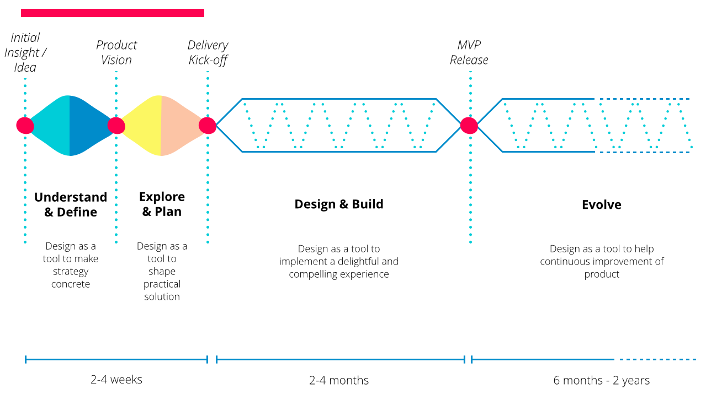
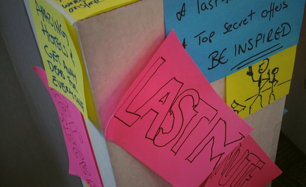
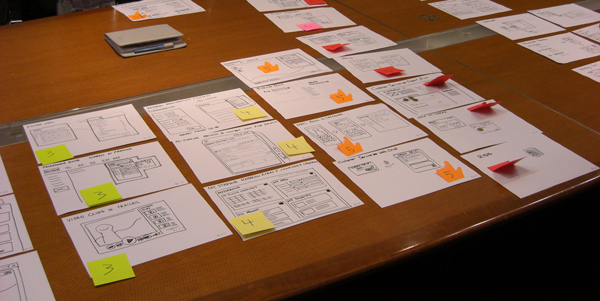
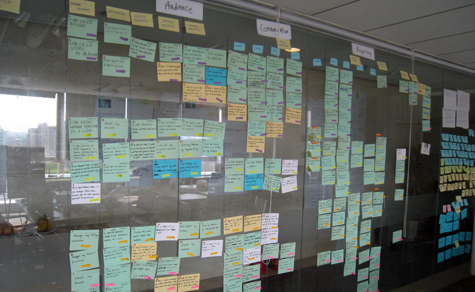
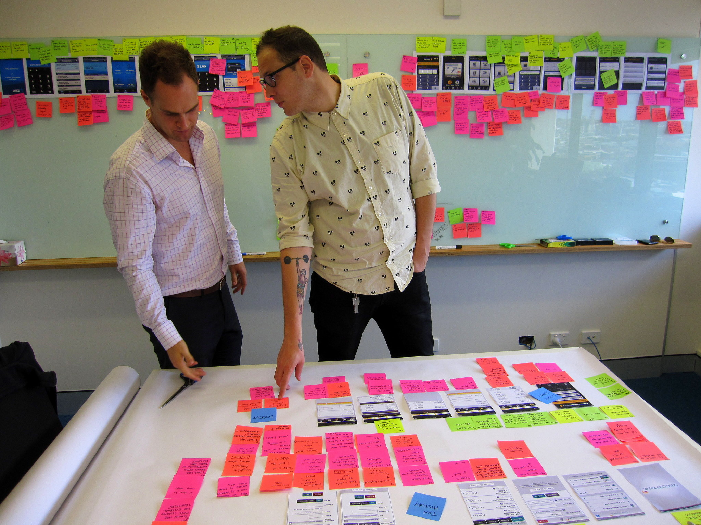

敏捷项目由QuickStart开始，顾名思义，和传统软件开发项目不同，敏捷项目的开始需要快速。作为一个标准敏捷项目QuickStart的参与者，我将在本文中介绍QS是如何准备，进行和结束的。
轻装上阵
敏捷的理念同样贯穿在QuickStart中，所有QuickStart的方法都基于敏捷的基本精神，因此也可以把QuickStart当作一个小型的敏捷项目，只是交付物是足以启动整个敏捷项目的所有准备，包括第一个交付期的迭代计划，足够的主故事列表，以及足够的原型设计。
敏捷项目中必备的工具自然要准备，这些包括：
- 足够多的卡片：我们把任何有需要的东西记录在卡片上，因为它们方便移动
- 足够多的贴条：我们在需要头脑风暴时需要
- 足够多的笔：不要让你的客户因为找不到笔而放弃写下自己看法
- 足够多的白纸：我们的原型都画在纸上，方便随时与客户交流
- 足够多的橡皮泥：用橡皮泥把我们的卡片以及一切有价值的东西贴在墙上
- 足够分辨率的相机：随时拍下一切认为有价值的东西，因为我们没有文档这种东西，我们需要最简单的记录手段。

另外我们还准备了若干个瓦楞纸盒，纸盒的作用将在后面提到。
人员上的配置也围绕最后的交付物，这也符合敏捷的精神：如果任何安排不能够体现在客户价值上（由交付物体现），这样的安排就应该被无情的剔除。这个项目组的人员配置如下：
- 资深架构师：他有资深的技术背景，具备相当的客户沟通能力，同时具备项目管理经验。架构师负责迭代计划的设计，宏观控制整个项目；
- 用户交互设计师（2位）：一位具备资深的用户交互设计经验，同时具备相当的引导客户的能力，可以说他的存在是为了帮助客户在头脑中形成未来产品的概念，不断发散；另一位具有将概念视觉化的能力，负责将不同的需求变成原型，帮助客户更加直观的理解需求。两位用户交互师相互协作达到帮助客户知道：我要什么？我要的东西是什么样的？因此由客户决定：我是不是真的要？
- 高级软件工程师：我们需要在团队中配置一名经验丰富的开发人员，用于估算需求开发量以达到设计出合理的迭代；
- 业务分析师：客户往往不会直接告诉你他们要什么，因此我们需要一位业务分析师在整个过程中发现和抽象化用户需求，把它们变成一个一个用户故事，并整理出一套主故事列表，帮助架构师完成迭代计划。
可以看出来，团队中的每两个角色之间都有紧密的联系并相互依赖，例如业务分析师需要交互设计师具象化的原型整理出抽象化的用户故事，交互设计师需要开发人员的帮助考量开发成本合理进行交互设计等等。同时，每个角色都互相协作完成最后的交付物。
在项目进行过程中，我们也遵循大部分的敏捷精神，例如每天的站立会议，每周的总结会议，此外我们还开发了不定期举行的“坐式会议 (Sit-down)”，即在酒店的大堂柔软的沙发或者新加坡河畔某个酒吧坐下，一起在轻松的环境里讨论项目进行的情况。
开始吧
QuickStart的精髓之一便是：
足够开始 (get enough to get started)
这符合敏捷“浅尝辄止”的精神。我们不需要得到所有客户的需求，而是得到足够我们进行第一个交付期工作量的需求，这个目的的核心在于让客户合理的甄选出什么是要先做，什么是要后做，什么也许不做。
整个过程遵循“先放后收”的轨迹：
- 首先我们帮助客户发散需求，让他们无限联想未来产品将会是怎样；
- 然后在逐渐把他们的需求不断收缩，收缩到第一个交付期需要做的需求，而这一部分需求往往是客户认为最有价值并需要优先实现的。
因此可以把QuickStart分做两个阶段：
1.带客户上天
2.把客户带回现实世界。

上图中红色部分便是快速启动期的双菱形模型。
好吧，让我们畅想
打住，畅想之前，我们得知道现在是个什么情况。
锚和引擎
这个实践的目的是让客户发现阻止和推动现有应用继续使用的因素是什么，分别用锚和引擎代表。我们把所有现有应用相关的客户聚集起来，给他们足够多的贴纸和笔，让他们写下他们心中的锚和引擎分别是什么，然后随心所欲地贴在白板上并由我们分类。不出所料，我们有大量的锚，其中在不同分类中数量最多的也许是他们认为最需要改进的地方，这样，初步地，我们得到了一个大概的信息——现在有多糟。
好，现在可以畅想了。
产品盒子
这个实践的目的是让客户把自己对未来产品的想法直观的展现出来。我们把客户分组，往往每个小组都包括不同角色的客户，比如IT人员和市场人员的组合。发给他们每组一个瓦楞纸盒(这就是纸盒的作用)，给他们足够多的笔，告诉他们相信我们未来的应用会被摆在超市的架子上，那么，产品的包装盒上会写什么？

大概15分钟后，我们会让每组的客户进行一个简短的表述，他们对未来产品的展望是什么。这时候你会发现，我们的业务分析师会在不停的记录，因为这里面可以发掘出许多用户故事。用户故事中的一个部分是：“我想(I want to)”，而这些产品盒子上正充满着不同的“我想”。
谁用？
用产品盒子的方法我们得到很多”我想那么用户故事里的“作为(as a)”如何确定呢？
我们想像出若干个典型的用户，给他们起不同的名字，和所有客户一起想像，他们的生活是怎样的，他有什么样的使用习惯，他想要什么，他又能从我们的应用中得到什么。经过讨论之后，我们总结出来四位典型的用户角色，这就是经典的Persona方法，这些角色也将贯穿我们后段的实践当中。
带我们一起体验
有了不同的典型用户，我们邀请客户和我们一起想像成自己就是典型用户，是如何在现有应用中实现自己不同需求的。在这个过程中，我们其中的一位交互师会根据讨论的内容绘制一幅现有网站的地图，这个地图也成为我们理解现有应用组成结构最直接的手段。
此时团队被一分为二，根据不同的功能模块，需求分析人员将继续和客户一起体验，而架构师和开发人员则邀请客户方IT部门的人员一起从技术角度分析现有系统。
第一次Showcase
敏捷崇尚不断向客户展示我们团队得到的信息，即showcase。在三周的QuickStart里每周五我们都会邀请所有客户进行Showcase。在第一周的Showcase里，主要展示的是我们在第一个阶段对需求信息的理解，回顾总结我们进行的各种实践项目。此时已经有一份将近400个的用户故事被发掘出来，并完成覆盖多个功能块的原型。
Showcase帮助我们及时地让客户了解我们的进度，成果以及下周的安排。关于下周的安排，我们并没有在项目开始就把三周的计划确定下来，直到每周的周五，对于下一周的计划才得以成型，此点也符合敏捷灵活勇于适应变化的原则。
回到地面
近400个的用户故事不是我们需要的，其中的很多也许是在未来的若干年都不会涉及的需求，我们需要更加粗线条的主用户故事(MasterStory)。此时我们的业务分析师会按照功能块将故事分类，并征询开发人员的意见，出具一个初步的主用户故事。接下来，两位用户交互师将通力合作准备即将进行的一个被称为"需求商店"的实践。
需求商店
一个最为重要的实践之一：我们开始实质性迭代计划的制定。
需求商店的概念是指在每个代表某项需求的用户故事上附上一定的价格，给予客户一定数量的钱币，让客户在几轮里选择将有购买的故事(需求)。每轮一般代表一个交付期(release)，每轮客户手中的钱则代表我们最大能在一个交付期里付出的开发量。
首先两位用户交互师按照主用户故事将各个故事涉及的需求用原型的方式分别画在A4纸上，并加上简单易懂的标题。这样的好处是可以让客户直观的理解每个故事的含义。

所有40个主用户故事被绘制完成后，我们把所有的故事摊在一张巨大的会议桌上，邀请客户方的技术人员一起讨论每个用户故事，目的就是定价。我们付出的开发量必然与现有系统遗留情况有很大关系，我们需要通过客户方的IT人员了解现有系统对未来某项需求工作量的影响。
对所有商店的商品(需求)进行定价以后，价格通常是5分，1角，2角，3角，5角，1元等，我们会邀请一位最重要的客户代表，他的手中将有1.5元的硬币，他将要求在桌上的”商品“上将他手中的1.5元花完。敏捷项目的每个交付期理想状态下应该有尽可能相近的工作量，这就是我们给予客户一定数量硬币的原因。
实践将分为若干轮，每轮代表一个交付期，因此第一轮里客户代表所买的商品被认为是客户最想最先实现的需求。敏捷欢迎变化，客户代表有时会对某个“商品”的价格产生疑问，我们将对这些疑问进行解答，如果大家能够达成一致，我们同意降价处理，若我们认为无法现在做决定我们会把这些商品暂时下架，待得到更多信息后进行处理。
另外，在不同轮当中，客户也会产生变化，我们欢迎客户回过头来把原来想最先实现的东西放在后面，这些都是被鼓励的。每个交付期的时间普遍是3个月，我们实际的轮数是6轮，大概是1年半的交付期。如果我们严格遵循敏捷没有价值的东西都该被剔除的原则,此处我不同的看法是轮数应该被控制在3轮，对于客户来说3个交付期以后，即9个月，发生的事情很难有先后顺序。我们的最终目标是要得到一个对于主用户故事的优先级排列，这是我们接下来迭代计划的重要依据。
需求商店的实践不止一次，因为在后段的工作中也许会发现新的需求或变更，我们将重开需求商店积极响应变化，此点也符合敏捷的精神。
需求商店之后，我们大致上已经有了一个相对稳定的迭代计划，至少在第一个交付期中客户期待完成的需求已经被确定，于是在后段的工作中我们的重点也开始转向第一个交付期中的需求，这又回到了我们开题时的目标-“足够开始”-第一个交付期3个月的工作足够一个敏捷项目的开始！
用户之旅
经过两周的积累，我们已经准备了覆盖足够广的原型设计，在QuickStart的最后一周里，我们将要给客户展示一个详细具体的原型设计关于某一段或两段用户之旅围绕第一个交付期的大部分用户故事。整个原型的精细颗粒度可能大于之前完成的整体原型设计，目标是展示某一个典型用户在完成某一项需求满足需要涉及到的功能，即用户故事。用户之旅的原型设计给客户一个直观的感受在第一个交付期结束以后，我们的应用能够满足用户什么样的需求，以及如何满足用户这样的需求。
估计工作量
此时的工作量预估已经可以十分精细，第一个交付期里的用户故事已经被添加上交付准则(Acceptance Criteria)。我们所做的事情跟项目开始以后对下一个交付期的故事进行估计基本一致-分析人员配合原型讲述每一个故事的内容，程序员则邀请客户方面技术人员一起参加，以斐波那契数列从1到21代表不同的大小的工作量为每个故事赋值。
第一个交付期的迭代计划
当第一个交付期的用户故事被较好的预估，我们便开始完成第一个交付期的迭代计划。工作量帮助我们最终出具一个每个迭代工作总量均衡的迭代计划（下图是一个项目整个交付周期的用户故事墙）。这个迭代计划将用于项目开始后3个月的开发工作。

最后的Showcase
到这里，整个QuickStart的目标被基本完成：为多个交付周期准备主故事列表；为第一个交付期准备完整的用户故事；为第一个交付期准备完整且合理的迭代计划；对第一个交付期所有故事设计一套较为精细的用户之旅原型。在最后的Showcase里，我们将向客户展示我们的交付物，并对整个工作过程进行总结。
恭喜，又一个敏捷项目就可以正式启动了！

写在最后
Quickstart的宗旨是“足够便开始”。 在项目的开始前，我们不需要详细了解所有，而只需要了解客户对整个项目的期望，从商业价值出发了解项目驱动，完成第一个交付期的用户故事，详细的迭代周期，足够开发参考的原型设计。这便是敏捷的魅力。